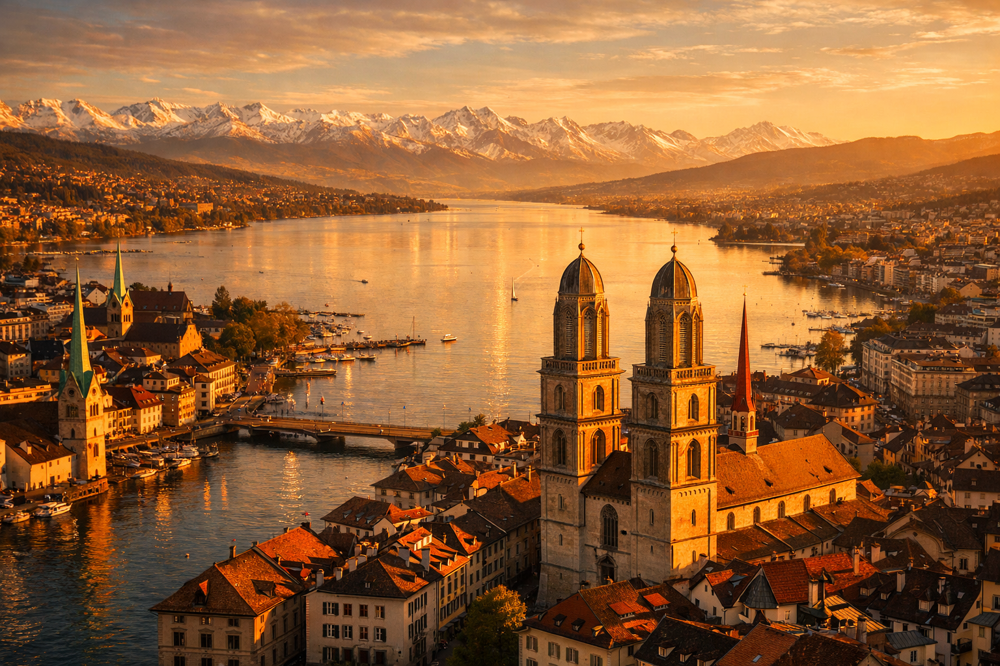
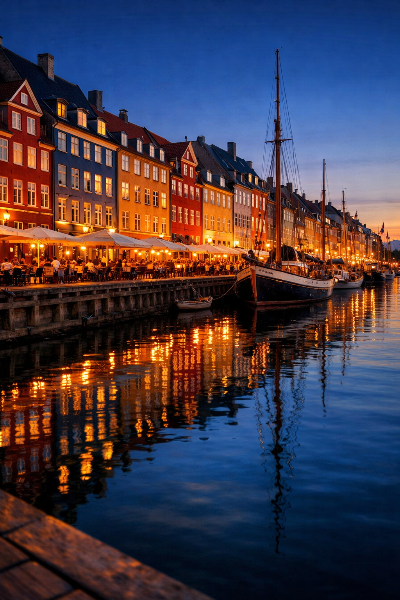
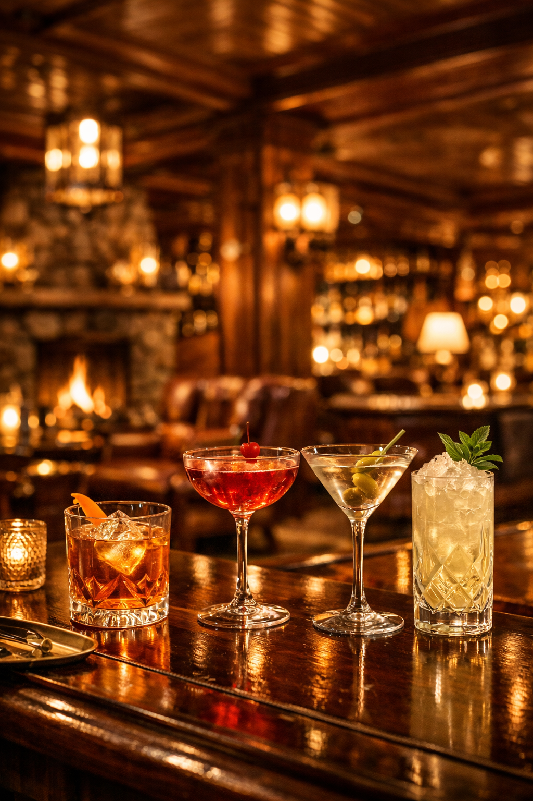
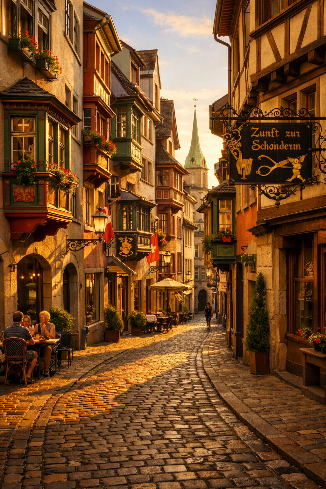
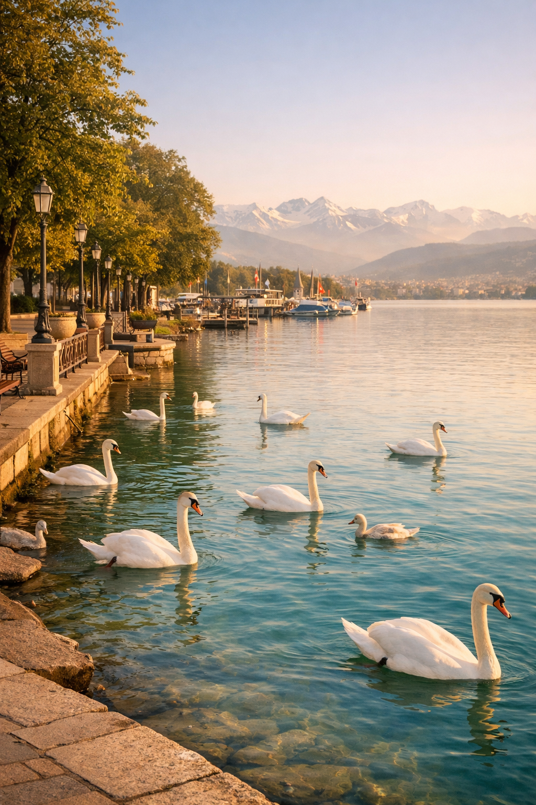

A Curated Trip · Copenhagen → Zürich
Mountain, art, old town & great food
The Journey
Fri 27
43° / 32°F
Snow showers
Sat 28
45° / 30°F
Light rain
Sun 29
44° / 35°F
Light rain

Charlotte is studying in Copenhagen — a chance to visit her before flying on to Zürich Friday evening.
Copenhagen · Wed–Fri
47° / 40°F
🌧 Bring an umbrella for city walking — Torvehallerne market is covered if you need shelter.
Overnight flight departing Wednesday night. Arrive Copenhagen (CPH) Thursday morning at 7 AM.
Metro M2 runs directly from Terminal 3 to Nørreport Station — 13 minutes, 30 DKK (~$4). Hotel is directly across from the station.
You cannot tap a credit card or phone on the gates. You must have a valid ticket or pass before boarding. No ticket = DKK 750 fine (~$100) from plain-clothes inspectors.
Easiest option — Rejsekort App (recommended). Download the Rejsekort app before you land. Link your credit card in the app. Swipe to check in before boarding, swipe to check out after.
Alternative — Rejsebillet App. Buy single tickets and City Passes. Pay with Apple Pay, Google Pay, or stored Visa/Mastercard.
At the airport — Ticket Machines. Machines in Terminal 3 near the metro entrance. Accept coins and cards.
City Pass — Worth It? If you'll ride 3+ times a day, a City Pass Small (zones 1–4, airport included) saves money. Unlimited rides for 24/48/72/120 hours.
Boutique 4-star hotel in central Copenhagen. Reception and the rooftop bar.
Phone: +45 7231 5001
Rooftop hours: Mon–Thu until 11:30 PM · Fri–Sat until 1 AM · Sun until 11 PM
Nørreport is Copenhagen's busiest transit hub — you're in the absolute center. Torvehallerne food market is 1 min walk.
Address: Holmbladsgade 70B, 2300 København S
Charlotte's place while she's studying in Copenhagen. Located in the Amagerbro neighborhood on Amager island.
Amagerbro is a young, vibrant neighborhood. Amagerbrogade (main street) has cafés, restaurants, and local shops.
Holmbladsgade sits in the heart of Amagerbro — a neighborhood known for its local character, cozy cafés, and harbor walks.
Reservation confirmed · 6:15 PM · 4 guests — James, Charlotte, Olivia & Temple
Address: Vodroffsvej 39, Frederiksberg — a lively neighbourhood eatery with sharing plates, cocktails & a relaxed atmosphere.
Hours: Thu open until midnight
Phone: +45 24 45 06 05
Fly from Copenhagen (CPH) to Zürich (ZRH) Friday evening. Copenhagen Airport is fast to reach — M2 metro direct.
From Charlotte's: Metro M2 Amagerbro → CPH Airport ~10 min
From hotel: M2 Nørreport → CPH ~13 min
✦ Copenhagen is compact and walkable. The M2 metro connects your hotel, Charlotte's neighborhood, and the airport.

A gentle landing. Activate your Zürich Card in the app at the airport. Nothing to prove on the first night.
Friday 27 March · Zürich
43° / 32°F
Snow showers
☔ No worries — your evening is all indoors at the hotel restaurant.
Collect bags. Activate Zürich Card in the app. Airport Express to HB every 10 min — 10-min ride, fully covered by Zürich Card. Then Tram 13.
Airport Express → HB 10 min · Tram 13 → Sihlquai/HB 2 min · 6 min walk. Hotel ~8:30–8:45 PM.
The hotel's Michelin-listed Thai restaurant — one of Zürich's best Thai tables since 1991. Staffed by Thai chefs.
Phone: +41 44 360 73 22
The hotel's New York-inspired bar — rare whiskies, craft cocktails. One drink, then bed. Saturday is the big day.
✦ If You Have Extra Time Friday
Short riverfront walk along the Limmat before bed — the lit bridges at night are beautiful, 3 min from hotel.
✦ Friday is a travel day — arrival, check-in, White Elephant, optional Lenox Bar. Nothing to prove on the first night.
The Big Day
Uetliberg → Sprüngli → Kunsthaus → Old Town → Lindenhof → aperitivo → Zeughauskeller. No hotel return needed.
Uetliberg → Sprüngli → Kunsthaus → Old Town → Lindenhof → Aperitivo → Zeughauskeller
Saturday 28 March · Zürich
45° / 30°F
Light rain
☔ Rain likely — if morning is dry, hit Uetliberg early. Kunsthaus and Old Town work in any weather.
Zürich's local mountain — a 20-min S10 train from HB takes you above the city. Walk 11 min to the summit tower.
Arrive trailhead 12:00 PM · Summit by 12:20 PM · 40 min at summit · Return train 1:00 PM · Back HB 1:20 PM
☁ Cloudy Alternative
Polybahn + ETH Terrace — historic funicular to ETH Zürich's terrace for sweeping city views, rain or shine. A 90-second ride from Central station.
🌧 Full Rain Alternative
Landesmuseum — Swiss National Museum, right next to Zürich HB. World-class cultural history under one roof. Free with Zürich Card.
Zürich's legendary confiserie since 1836. The hot chocolate is considered legendary by locals. Order Luxemburgerli macarons.
Address: Bahnhofstrasse 21. OR Tram 13 → Paradeplatz 5 min.
Switzerland's largest art museum. Must-see: Bührle Collection (Monet, Cézanne, Renoir), Munch (largest collection outside Norway).
Address: Heimplatz 1. Walk 14 min E from Sprüngli · OR Tram 3 Paradeplatz → Kunsthaus 6 min · or Uber ~4 min.
Light lunches in the bright Moser Building café — soups, salads, open sandwiches. Part of the museum visit.

Zürich's most photographed medieval lane. Cross the Limmat to Grossmünster (twin-towered Romanesque cathedral, begun 1100s). Then Fraumünster with Marc Chagall's magnificent stained glass. Münsterhof square beyond — car-free and beautiful.
Former Roman fort hilltop park. Panoramic views over the Limmat and Old Town rooftops. A large public chess set here.
Walk 5 min down from Lindenhof to the Münsterhof square. Order a Spritz or local wine. Watch the square.
Then walk 2 min direct to Zeughauskeller on Bahnhofstrasse.
Zürich's most famous beer-hall restaurant, in a 15th-century former armory on Bahnhofstrasse. High ceilings, long oak tables, Zürich staples.
Address: Bahnhofstrasse 28A
Phone: +41 44 220 15 15
After dinner: Tram 13 → Sihlquai/HB
✦ If You Have Extra Time Saturday
Niederdorf lanes (N of Grossmünster). Cabaret Voltaire on Spiegelgasse — birthplace of Dada. Beyer Watch Museum (free, near Sprüngli).
✦ Saturday arc: mountain → hot chocolate → great art → medieval city → hilltop panorama → aperitivo → legendary beer hall.

Departure Day
The breathing day — unhurried and beautiful. Leave hotel by 6:00 PM sharp. Full city window: 10 AM–4:30 PM.
Sunday 29 March · Zürich · Palm Sunday
44° / 35°F
Light rain
🌧 Skip the boat — extra time at Rietberg or a second pass through Old Town instead.
World's oldest vegetarian restaurant (est. 1898). Legendary Sunday brunch buffet — 100+ dishes: Indian, Asian, Mediterranean, Swiss.
Address: Sihlstrasse 28. OR Tram 13 → Paradeplatz + 7 min walk.
Phone: +41 44 227 70 00
Quaianlagen park from Bürkliplatz: swans, sailboats, Alps views on clear days. Pure unscheduled downtime.
Option A: Lake Zürich Boat Cruise ↗
ZSG short Rundfahrt cruises from Bürkliplatz — ~40 min, a completely different city view from the water.
Option B: Polybahn Funicular 🔊 POH-lee-bahn
Zürich's tiny historic funicular — a 90-second ride from Central up to ETH Zürich. One of the best views in the city.
Lakeside terrace directly over the water. Seasonal Swiss fish from Lake Zürich: smoked trout, perch, pike.
Address: Bellerivestrasse 160
Phone: +41 44 422 25 20
Recommended: book ahead
Asian, African & Oceanic art in historic villas in Rieter Park. Wagner wrote Tristan here. The underground extension is spectacular.
Address: Gablerstrasse 15. OR Tram 7 from Bellevue → Museum Rietberg.
The hotel's own Swiss restaurant — authentic Züri Gschnätzlets, cheese fondue, regional produce. Your last meal in Zürich.
Phone: +41 44 360 73 18
Ask hotel to seat you at 5:15 PM — mention 8:25 PM flight.
Leave hotel by 6:00 PM. Uber from hotel to ZRH Airport — approximately 15 minutes (10 km). Arrive ZRH by 6:20 PM — 2 hrs to spare.
✦ If You Have Extra Time Sunday
Choose one optional: the boat cruise (~40 min) or the Polybahn (~20 min). Not both — Sunday is designed to breathe. Do NOT add stops after 3:30 PM.
⚑ Verify the week of travel: Confirm Zeughauskeller (+41 44 220 15 15) and eCHo (+41 44 360 73 18) 48 hrs before. Check SBB app for tram alerts.
✦ Flight ZRH 8:25 PM. Leave hotel 6:00 PM → Uber ~15 min → ZRH 6:20 PM → 2 hrs to spare. Do not add stops after 3:30 PM.
Quick Reference
🇪🇺 🇨🇭 🇩🇰
Pre-Trip Planning
Two new EU systems are changing how Americans enter Europe. Know your obligations before CPH → ZRH.
EU CH DKEES
Live since Oct 2025 — enforced 10 Apr 2026
ETIAS
Launches Q4 2026 — not required for this trip
90/180
Schengen visa-free stay limit still applies
Entry / Exit System
Replaces passport stamps with digital fingerprint + facial scan at Schengen borders. Automatically tracks your 90/180-day stay. Rolled out since Oct 2025; fully mandatory by 10 April 2026.
Your 26 Mar CPH arrival falls within the transition window — expect biometric registration at Copenhagen Airport.
Travel Authorization
A mandatory online authorization for visa-exempt nationals (incl. Americans). €20 fee, valid 3 years. Must be approved before boarding any flight to Schengen countries.
Launches Q4 2026 with a 6-month grace period. Not required for your March 2026 trip. Monitor for future travel.
€20
ETIAS Fee Per Person
3 yr
ETIAS Validity
90d
Max Stay / 180 Days
Implementation Timeline
What You Need To Do
Important for this trip: Your 26 Mar arrival at CPH is 15 days before EES becomes fully mandatory on 10 Apr 2026. Biometric registration is likely but may not be universal — do not refuse biometric registration — refusal can result in denied entry.
What Is the Schengen Area?
Named after Schengen, a small village in southeastern Luxembourg where France, Germany, and Luxembourg meet at a tripoint on the Moselle River. On 14 June 1985, five nations signed a treaty aboard a boat moored there, abolishing border checks between them. Today the Schengen Area spans 29 European countries operating as a single passport-free zone — the largest open-border area in the world. Once you clear customs at your first point of entry (Copenhagen, in your case), you move freely between member states with no further border controls.
Zürich Card
72-Hour Pass
CHF 56 pp · All trams, buses, boats, Uetliberg + 40 museums free. Activate in Zürich City Guide app at the airport on arrival.
Weather Forecast
43–45°F
Highs 43–45°F · Lows 30–35°F · 55–100% rain · Layers + compact umbrella
Home Stop
Sihlquai / HB
6 min walk from hotel. Bahnhofquai/HB stop closed until Dec 2026.
Emergency
112
112 — Any emergency
144 — Ambulance
117 — Police
118 — Fire
111 — Out-of-hours Doctor
Reference
| Destination | Via | Time | |
|---|---|---|---|
| Hotel from Airport | Airport Express + Tram 13 | 30–40 min | |
| Uetliberg Summit | S10 from HB tracks 21/22 · Zürich Card ✓ | 20 min | |
| Café Sprüngli | Walk 13 min from HB | 13 min | |
| Kunsthaus | Walk from Sprüngli · or Uber ~4 min | varies | |
| Old Town (Augustinergasse) | Walk from Kunsthaus | 10 min | |
| Lindenhof | Walk from Fraumünster | 5 min | |
| Zeughauskeller | Walk from Münsterhof | 9 min | |
| Hiltl | Walk 18 min from hotel / Uber ~5 min | 18 min | |
| Quaianlagen | Walk 13 min S from Hiltl | 13 min | |
| Bürkliplatz (boat pier) | Walk S from Hiltl | varies | |
| Fischerstube Zürihorn | Tram 2 → Zürichhorn | 10 min | |
| Museum Rietberg | Uber ~10 min / Tram 7 from Bellevue | ~10 min |
Home stop: Sihlquai/HB — 6 min walk from hotel. Bahnhofquai/HB stop closed until Dec 2026.
| Meal | Restaurant | Details |
|---|---|---|
| Fri arrival | White Elephant | Hotel Thai restaurant · +41 44 360 73 22 |
| Fri optional | Lenox Bar | Hotel whisky bar |
| Sat lunch | Kunsthaus Café | On-site, Moser Building |
| Sat dinner | Zeughauskeller ★ | Confirmed 7:30 PM · +41 44 220 15 15 |
| Sun brunch | Hiltl | 9:30 AM–2:30 PM · +41 44 227 70 00 |
| Sun lunch | Fischerstube Zürihorn | +41 44 422 25 20 |
| Sun farewell | eCHo at Marriott | +41 44 360 73 18 |
Activate Zürich Card in the Zürich City Guide app before your first journey. Tap your 72 hr card and press Activate. Show your phone to inspectors.
Fine: CHF 90 if caught without a valid ticket. Plain-clothes inspectors board at both ends.
Trams leave on the exact second shown in the timetable. If you're on the platform as it departs, it's gone.
Keep voices low on trams. Phone calls are frowned upon. Swiss public transport is noticeably hushed.
Almost all shops are closed. Buy anything you need Saturday before 6 PM.
Open Sunday: Zürich HB mall, bakeries, all restaurants, museums, and parks.
March 29 is Palm Sunday — Old Town processions and Grossmünster services add local colour.
SBB Mobile — real-time tram and train departures, live delay alerts. Set home stop to Sihlquai/HB.
Google Maps — download Zürich offline map before leaving Copenhagen.
Google Translate — download German pack. Camera feature reads menus in real-time.
Uber — works normally in Zürich. Useful for Fischerstube → Rietberg on Sunday.
Cards accepted almost everywhere — Visa and Mastercard work at all restaurants and museums.
Carry CHF 50–80 cash as backup. ATMs (Bancomats) inside HB and near Paradeplatz.
Switzerland is not in the EU. Currency: CHF. 1 CHF ≈ 1.05 EUR.
Tell your bank before you travel. Danish cards abroad can trigger fraud blocks.
Download Google Maps offline before you leave. Open Google Maps → search "Zürich" → swipe right on the place card → Download offline map.
Check your US carrier plan first. T-Mobile includes free international data and texting on most plans. AT&T offers an International Day Pass for $12/day. Verizon's Travelpass is $10/day.
Consider an eSIM if your carrier charges for roaming. Providers like Airalo, Holafly, and Sally offer Switzerland plans from ~$4. Install and test the eSIM on Wi-Fi before your trip.
eSIM compatibility: iPhone XS and newer, most Samsung Galaxy S20+ and newer, Google Pixel 3+.
Wi-Fi is widely available. The Marriott offers free Wi-Fi for Bonvoy members. Most restaurants, museums, and Zürich HB have free Wi-Fi.
Also download Google Translate's German pack for offline use. Camera mode translates menus and signs in real-time without data.
Turn off cellular data on your physical SIM if using an eSIM. Accidental roaming can cost $2–10/MB.
Crossing on red: Swiss pedestrians don't. Jaywalking is technically illegal.
Tap water and public fountains are safe — exceptional quality.
Lost passport: Danish Embassy Bern +41 31 360 76 76 · 24-hr emergency +45 33 92 11 12.
Nearest hospital: UniversitätsSpital Zürich — Rämistrasse 100 · Tram 9 → Rämistrasse.
| Phrase | Pronunciation | Meaning / Usage | |
|---|---|---|---|
| Hej | HI | Hello | |
| Hej hej | HI HI | Goodbye | |
| Tak | TAK | Thank you | |
| Mange tak | MANG-uh TAK | Many thanks | |
| Nej tak | NIE TAK | No thank you | |
| Skål! | SKOHL | Cheers! | |
| Undskyld | OON-skool | Excuse me / Sorry | |
| Velbekomme | vel-beh-KOM-muh | You're welcome / Enjoy your meal | |
| Hygge | HOO-guh | Coziness/warmth concept | |
| Regningen, tak | RYE-ning-en TAK | The bill, please |
Opening with "Grüezi" transforms how locals respond to you.
| Phrase | Pronunciation | Usage | |
|---|---|---|---|
| Grüezi | GREW-tsee | Hello / Good day — use entering any shop or restaurant. | |
| Merci | MER-see | Thank you — locals use this far more than "Danke". | |
| Bitte | BIT-tuh | Please / You're welcome. | |
| En Guete! | en GOO-tuh | Enjoy your meal! | |
| D'Rechnig bitte | d'REKH-nig BIT-tuh | The bill, please. | |
| Proscht! | PRAWSHT | Cheers! Make eye contact when clinking. |
Every place you'll visit in Copenhagen and Zürich.
| Place | Say It | What It Is | |
|---|---|---|---|
| København | kuh-ben-HOWN | Copenhagen in Danish. Literally "merchants' harbour". | |
| Nørreport | NUR-uh-port | Your metro station & hotel. The city's busiest hub. | |
| Torvehallerne | TOR-vuh-hal-AIR-nuh | The glass food market next to Nørreport. 3 min walk. | |
| Nyhavn | NOO-hown | The iconic colourful harbour. 19 min walk (or Uber ~6 min). | |
| Strøget | STROY-et | Europe's longest pedestrian shopping street. | |
| Kongens Nytorv | KONG-ens NOO-tor | "The King's New Square" where Strøget ends at Nyhavn. | |
| Amagerbro | ah-MAH-er-bro | Charlotte's neighborhood. | |
| Kastrup | KA-strup | Copenhagen Airport (CPH). | |
| Frederiksborggade | FRED-riks-borg-GAH-thuh | Street where hotel is located. |
| Place | Say It | What It Is | |
|---|---|---|---|
| Zürich | TSOO-rikh | City name. | |
| Sihlquai | ZEEL-kai | Your home tram stop. | |
| Uetliberg | OOT-lee-berg | Zürich's local mountain. Saturday morning. | |
| Sprüngli | SHPRUNG-lee | Legendary confiserie. Hot chocolate & macarons. | |
| Luxemburgerli | LUX-em-burger-lee | Sprüngli's famous small macarons. | |
| Bahnhofstrasse | BAHN-hof-SHTRAH-seh | Main shopping street. | |
| Kunsthaus | KOONST-howss | Switzerland's largest art museum. | |
| Augustinergasse | ow-goo-STEE-ner-gah-suh | Zürich's most photographed medieval lane. | |
| Grossmünster | GROSS-mun-ster | Twin-towered Romanesque cathedral. | |
| Fraumünster | FROW-mun-ster | Cathedral with Chagall stained glass. | |
| Lindenhof | LIN-den-hohf | Roman hilltop park. Best Old Town panorama. | |
| Münsterhof | MOON-ster-hohf | Car-free square near Fraumünster. Pre-dinner drinks. | |
| Zeughauskeller | TSOYG-howss-kel-er | 15th-century armory restaurant. Saturday dinner. | |
| Hiltl | HILL-tul | World's oldest vegetarian restaurant. Sunday brunch. | |
| Quaianlagen | KY-ahn-lah-gen | Lakefront park for Sunday promenade. | |
| Bürkliplatz | BOOR-klee-plahts | Lake pier — boat cruise departure point. | |
| Polybahn | POH-lee-bahn | The tiny funicular up to ETH Zürich. | |
| Fischerstube | FISH-er-shtoo-buh | Lakeside fish restaurant. Sunday lunch. | |
| Zürihorn | TSOO-ree-horn | Lakeside park area near Fischerstube. | |
| Rietberg | REET-berg | Art museum in Rieter Park. Sunday afternoon. |
Dishes and drinks you'll encounter in Copenhagen and Zürich.
| Term | Say It | What It Is | |
|---|---|---|---|
| Smørrebrød | SMUR-bruh | Open-faced rye sandwich. Denmark's national lunch. | |
| Wienerbrød | VEE-nuh-bruh | "Danish pastry" — what the Danes actually call it. | |
| Kanelsnurrer | kah-NEL-snoo-uh | Cinnamon swirl pastry. Try at any bakery. | |
| Rødgrød med fløde | RUTH-gruth meth FLUH-thuh | Red berry pudding with cream. A Danish tongue-twister. | |
| Rugbrød | ROO-bruh | Dense dark rye bread. The base of all smørrebrød. | |
| Øl | UHL | Beer. Carlsberg and Tuborg are Copenhagen originals. |
| Term | Say It | What It Is | |
|---|---|---|---|
| Zürcher Geschnetzeltes | TSOO-rkher geh-SHNET-sel-tes | Zürich's classic veal in cream sauce. | |
| Rösti | RUSH-tee | Swiss potato cake. | |
| Älplermagronen | ELP-ler-mah-GRON-en | Alpine mac & cheese with potato, onion, applesauce. | |
| Züri Gschnätzlets | TSOO-ree g'SHNETS-lets | Zürich dialect for Geschnetzeltes — on eCHo's menu. | |
| Fondue | fon-DOO | Melted cheese dish. | |
| Birchemüesli | BEER-kheh-MOOS-lee | Original Zürich muesli — raw oats, fruit, yoghurt. |
Explore · 360° Views
Tap any location to explore it in 360°. Drag to look around, use arrows to walk the streets.
🇩🇰 Copenhagen
Scandic Nørreport Hotel
Frederiksborggade 18 — Your base in central Copenhagen
Torvehallerne Market
Frederiksborggade 21 — Copenhagen's gourmet food hall, 3 min from hotel
Nyhavn
Copenhagen's iconic colorful waterfront — 19 min walk from hotel
Rundetårn (Round Tower)
Købmagergade 52A — 17th-century observatory, 6 min from hotel
Strøget
Europe's longest pedestrian shopping street — 17 min walk from hotel
Amagerbro — Charlotte's Neighborhood
Where Charlotte is living while studying in Copenhagen
Copenhagen Airport (CPH)
E20 approach to CPH — 13 min by M2 metro
🇨🇭 Zürich
Zürich Marriott Hotel
Neumühlequai 42 — Your home base on the Limmat
Uetliberg Summit
871 m — Zürich's local mountain, Saturday morning
Confiserie Sprüngli
Bahnhofstrasse 21, Paradeplatz — Hot chocolate & Luxemburgerli
Zeughauskeller
Bahnhofstrasse 28A — 15th-century armory restaurant
Fischerstube Zürihorn
Bellerivestrasse — Lakeside fish restaurant, Sunday lunch
Background
The stories behind the places you'll visit.
Copenhagen began as a Viking fishing village in the 10th century. In 1167, Bishop Absalon fortified the harbour with a castle — the city's name, København, literally means "merchants' harbour." It became Denmark's capital in the early 15th century and exploded under Christian IV (1596–1648), who built the Round Tower, Rosenborg Castle, and Christianshavn modelled on Amsterdam. Nørreport, where your hotel sits, was one of the original four city gates — all traffic entering Copenhagen for centuries passed through here. Torvehallerne food market next door stands on the old Højtorv livestock marketplace. Denmark maintains one of the oldest continuous monarchies in the world, and the royal family still resides at Amalienborg Palace, a 10-minute walk from your hotel.
The summit you'll visit Saturday morning has been settled since at least 4000 BC. Around 500 BC, the Celts built one of Switzerland's most important Iron Age fortifications here — an oppidum with walls up to 14 metres high and 35 metres thick, enclosing a large hilltop settlement. Remains of these ancient ramparts are still visible at the Uto Kulm summit. The Romans later stationed a garrison here to protect their customs post (Turicum) at the lake below. In the Middle Ages, a nobleman named Landenberg built a castle on the summit, the Uotelenburg, which was destroyed when Zürich allied with Rudolf von Habsburg. The Uetliberg railway has run since 1874 — the same S10 line you'll take.
David Sprüngli opened his confiserie on Paradeplatz in 1836. In 1892, his son split the business: Rudolf took the chocolate factory (which became Lindt & Sprüngli, now a global giant), while the other son kept the Bahnhofstrasse café. The Luxemburgerli — Sprüngli's miniature macarons — were inspired by a Luxembourgish pastry chef's recipe in the 1950s and have remained a signature ever since. The Paradeplatz café has occupied its current location for nearly two centuries, becoming as much a Zürich institution as the banks surrounding it.
The Kunsthaus was founded in 1787 as the collection of the Zürich Artists' Society. The current Heimplatz building opened in 1910 and has been expanded several times. David Chipperfield's monumental 2021 extension doubled the museum's size, creating one of the largest art museums in the German-speaking world. The Bührle Collection — Impressionist and Post-Impressionist masterworks by Monet, Cézanne, Renoir, Van Gogh, and Manet — is housed in the new wing. The museum holds the world's largest Munch collection outside Norway and an unrivaled group of Giacometti sculptures.
Grossmünster's construction began around 1100 on the site where legend says Felix and Regula, Zürich's patron saints, were martyred by the Romans. Charlemagne's horse supposedly stumbled over their graves, revealing the holy site. The twin towers became Zürich's defining symbol. Huldrych Zwingli launched the Swiss Reformation from its pulpit in 1519, stripping the interior of images and fundamentally changing European Christianity. Across the river, Fraumünster was founded in 853 by King Ludwig the German for his daughter Hildegard. Its cloisters date to the 13th century. Marc Chagall created the five magnificent stained glass windows in 1970 — they are among his most celebrated works.
The building on Bahnhofstrasse 28A where you'll have your confirmed Saturday dinner was constructed around 1487 as Zürich's municipal armoury — Zeughaus means "arsenal." For over four centuries it stored the city's weapons, armour, and gunpowder. The vaulted stone cellar with its massive oak beams and pillars survives intact from the original construction. In 1926 it was converted into the beer hall restaurant you'll see today, and it has operated continuously since. The Zürcher Geschnetzeltes (veal in cream sauce) served here follows a recipe that's been a Zürich staple since at least the 19th century.
The world's oldest vegetarian restaurant, confirmed by Guinness World Records, opened in 1898 as the "Vegetarierheim & Abstinenzcafé" on Sihlstrasse. Locals mocked it as the "Wurzelbunker" (root bunker) and guests entered through the back door to avoid being seen. In 1901, a Bavarian tailor named Ambrosius Hiltl visited on his doctor's orders to treat severe rheumatism. He recovered, fell in love with the cook Martha Gneupel, married her, and took over the restaurant in 1904. In 1951, daughter-in-law Margrith travelled to Delhi as Switzerland's delegate to the World Vegetarian Congress and returned with bags of spices — introducing Indian-accented dishes decades before they became mainstream in Europe. Now in its fourth generation, Hiltl has expanded to eight branches across Zürich, and its Sunday brunch buffet (the one you'll have) draws over 100 dishes from Indian, Asian, Mediterranean, and Swiss traditions.
Lake Zürich was formed by glacial retreat roughly 20,000 years ago and has been central to human settlement here since the Neolithic. The prehistoric pile dwellings along its shores are a UNESCO World Heritage Site. Bürkliplatz, where you'll walk and possibly board a boat, was created in the 1880s when the city's quays were extended and landscaped — named after Arnold Bürkli, the engineer who designed Zürich's modern lakefront. The ZSG boat company has operated cruises on the lake since 1890. On clear days from the promenade, you can see the Glärnisch and Tödi peaks of the Alps over 60 km away.
Travel Logistics
Booking References: EWR↔CPH: Y9HY5Z · ZRH↔CPH: Y8LBLD
| Status | Route | Date | Dep | Arr | Flight | Info |
|---|---|---|---|---|---|---|
| Sched | ZRH → CPH | Mar 29 | 8:25 PM | 10:10 PM | SK610 | Seats 3F/3D · Board 7:55 PM |
| Sched | CPH → EWR | Mar 31 | 12:30 PM | 2:59 PM | SK909 | 8h 29min |
| Arr | EWR → CPH | Mar 25 | 10:34 PM | 10:43 AM+1 | SK910 | T3 EI35 |
| Arr | CPH → ZRH | Mar 27 | 5:52 PM | 7:30 PM | SK609 |
| Status | Hotel | Location | Check-In | Check-Out | Nights | Notes |
|---|---|---|---|---|---|---|
| Now | Zurich Marriott | Zurich | Fri Mar 27, 3 PM | Sun Mar 29, 4 PM | 2 | Bonvoy |
| Next | Scandic Nørreport | København K | Sat Mar 29, 4 PM | Tue Mar 31 | 2 | 1 Adult · Superior Plus |
| Done | Scandic Nørreport | København K | Tue Mar 25 | Thu Mar 27 | 2 |
Find restaurants, pharmacies, ATMs, and attractions near your current location in Zürich.